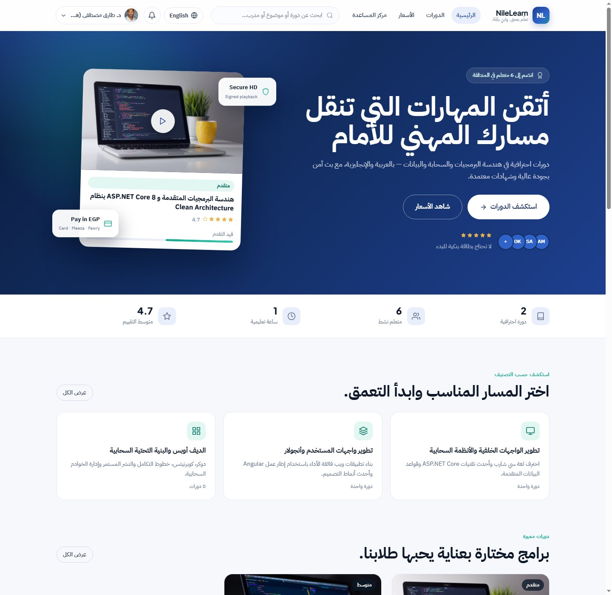
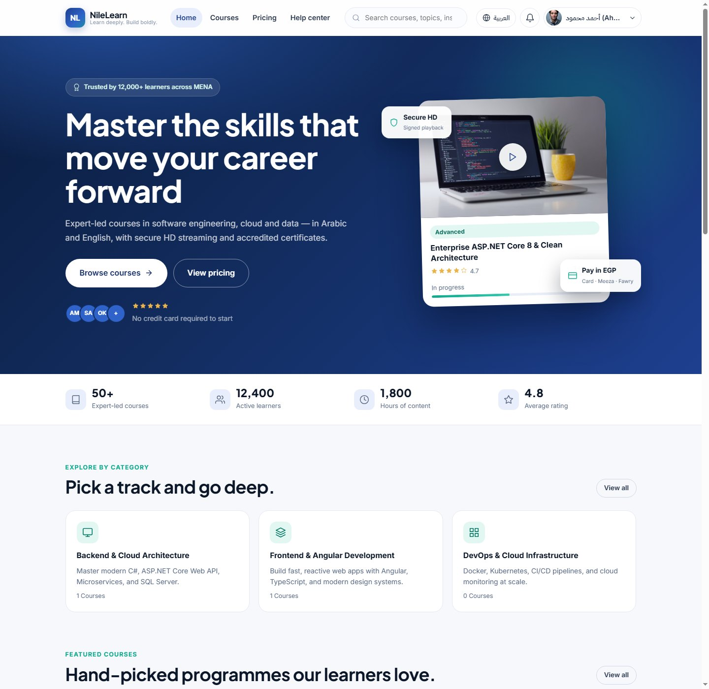
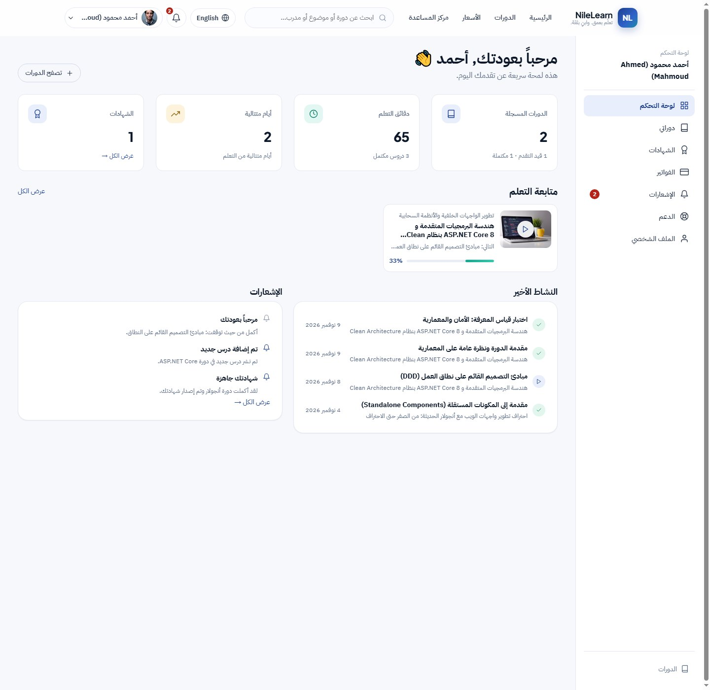
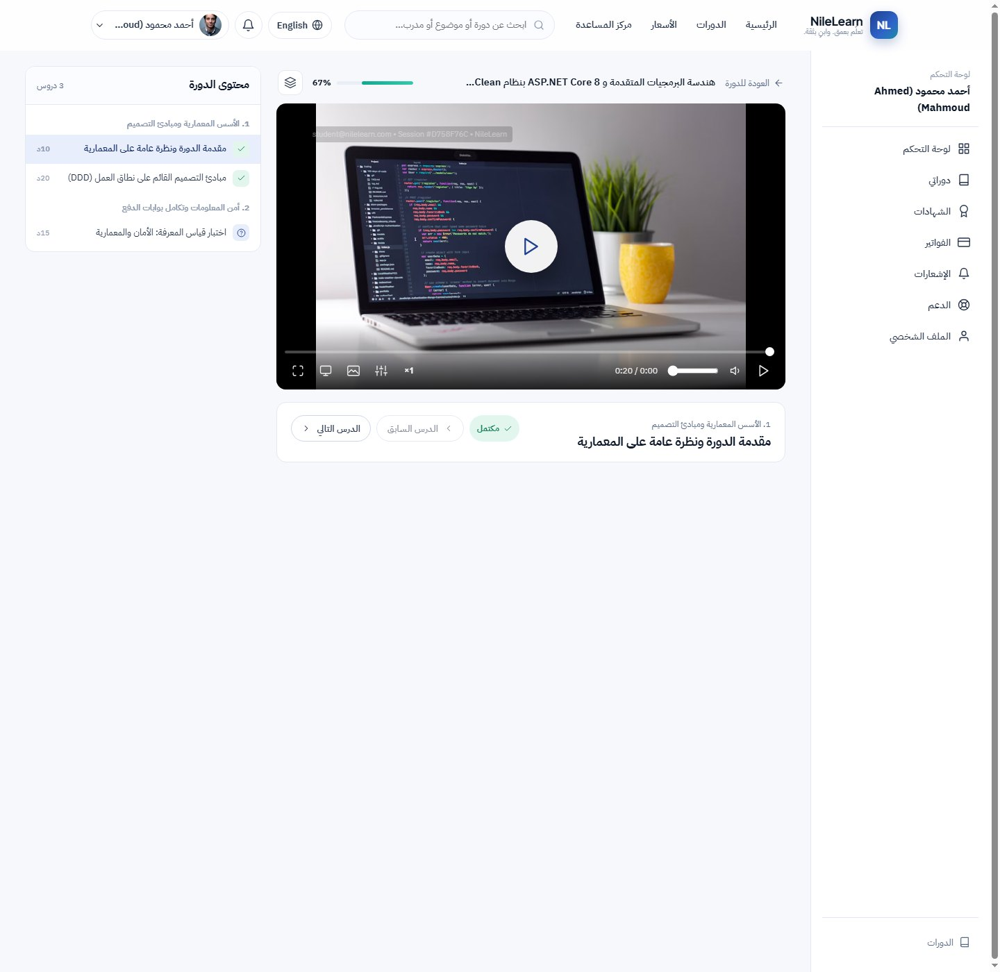
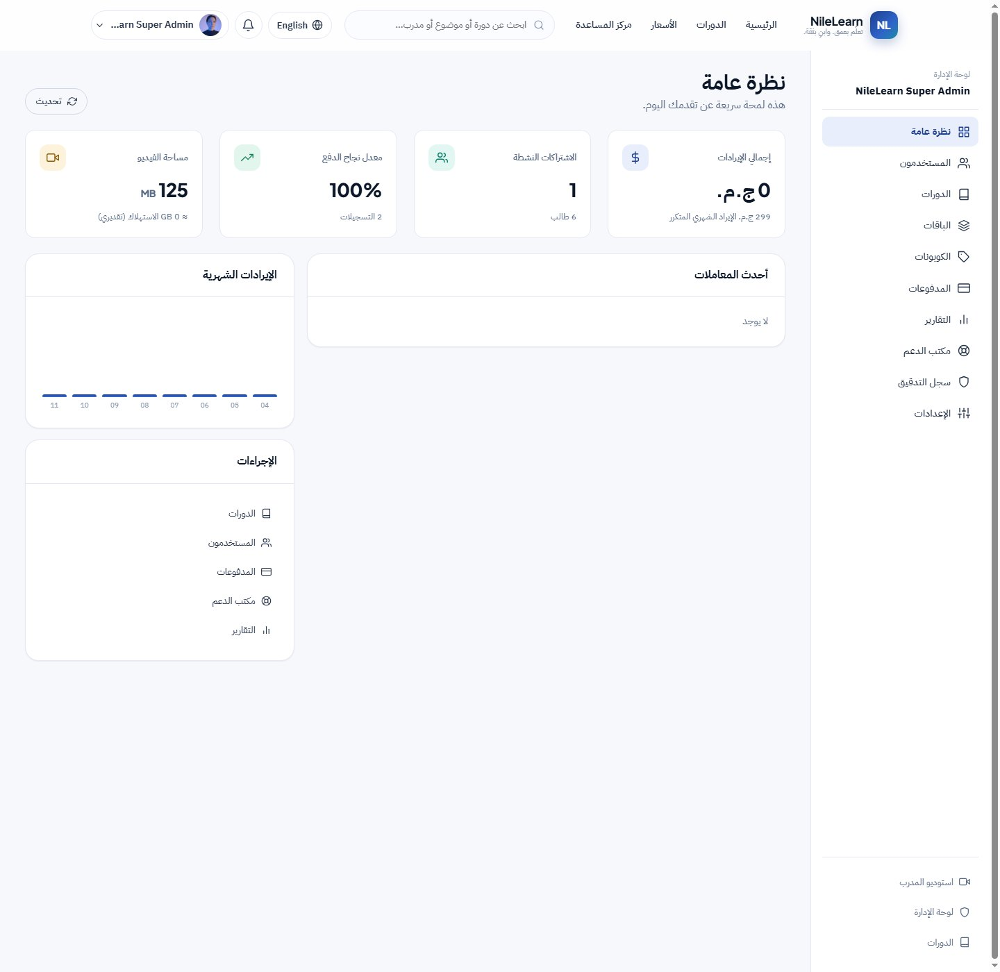

Arabic-first, bilingual
Arabic RTL and English LTR share one Angular build. Content, navigation, dates and layout direction all switch together.
A production-shaped LMS for the Egyptian and international market: an Arabic-first catalogue with full RTL support, EGP checkout with provider-independent payments, authorised video delivery, timed assessments, verifiable certificates and a complete administration console.
Discovery, purchase, playback, assessment and certification — with the operations console behind it.
Arabic RTL and English LTR share one Angular build. Content, navigation, dates and layout direction all switch together.
Search, category, level and price filters, sorting and paging — with curriculum previews, outcomes, instructors and reviews.
Provider-independent payment orchestration with signed webhooks, idempotent state transitions, coupons and invoices.
Playback tokens and entitlement checks on every request. Resume, speed, quality, PiP, theatre mode and a moving watermark.
Timed quizzes with server-side deadlines and attempt limits, plus article lessons inside the same curriculum.
Verifiable completion certificates that can be checked from a public link.
Revenue share, student and rating metrics, a course editor and resumable chunked video upload that survives network loss.
Revenue and MRR, users and roles, course status, plans and coupons, payment ledger with refunds, support desk and audit log.
JWT access tokens, rotating refresh tokens hashed at rest, optional email-code 2FA and session/device revocation.
Real captures from the application, taken from the project's documented screenshot set.





The interesting work is in the edges: money state, playback authorisation and a bilingual UI that stays consistent.
NileLearn is a full-stack application, so this tour uses the screenshots kept in the repository's
docs/images folder. The README covers the local run steps, the seeded catalogue, demo accounts
for student, instructor and admin, and the SQLite zero-config mode used for evaluation.